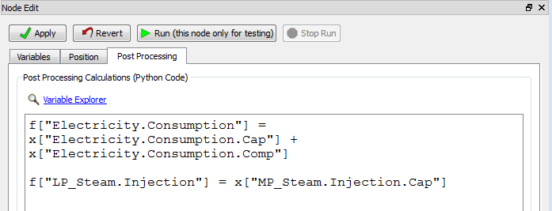

Tutorial¶
This tutorial demonstrates the use of FOQUS to perform heat integration with process simulations. This tutorial uses four models: (1) bubbling fluidized bed (BFB) model in ACM, (2) multi-stage compressor model in ACM, (3) heat integration model in GAMS, and (4) simplified steam cycle model in Python. Heat integration and steam cycle models are included in FOQUS as plug-in models (as described in Section [section.plugin]). Because most detailed steps for adding/editing models, building flowsheets, and running simulations have already been covered in the previous section, they are skipped here.
Example ACM and JSON files are provided with the FOQUS installer and are typically installed at: C:Program Files (x86)foqusfoqus_2014.10.0examples \Heat_IntegrationModel_Files. Copy the example files to a convenient location.
This tutorial is divided into 10 major steps.
GAMS Pre-Settings (Windows System Only)¶
If the user is working on a Windows system, the GAMS installation directory needs to be added into the system path. Navigate to the Windows Control Panel, select System and Security, select System. Select Advanced system settings in the left side bar. In the System Properties window, click Environment Variables. In the Environment Variables window, navigate to the System variables box, double-click the variable Path. Add the GAMS installation directory to the Variable value box. An example of the GAMS directory is: C:GAMSwin6424.2. The user needs to modify the above path to the exact location where GAMS is installed.
If the user is using GAMS in the first time (after installation or re-installation), double-click the GAMS icon on the desktop. A prompt dialog displays, asking the user to select default solvers. Click OK to accept all default solver selections. Close GAMS.
Open a GAMS Project (Windows System Only)¶
Suppose the current directory is the user’s working directory (e.g., C:FOQUS). If the user is working on a Windows system, navigate to the directory “gams”, and double-click the file “HeatInteg.gpr.” This will open the file in GAMS and make its path the current GAMS working directory. Close GAMS. All GAMS input and output files will be stored in this directory. This step is not necessary with a Linux system. All GAMS files should be closed when running heat integration.
Start a New Session¶
Start FOQUS. Start a new session. In the “Session Information” screen, under the Metadata tab, enter “BFB_CP_HI_SC” in the Session Name field (Figure [start.session]). Save the session.

Start a New Session
Upload Simulation Models¶
The ACM BFB and compressor model files need to be uploaded to the turbine.
Choose Add/Update Model to Turbine. In the Turbine Upload dialog, upload the BFB ACM model file (Figure [upload model]). The SimSinter configuration file for the BFB model is BFB_3ads_2rgn.json. Enter “BFB_3ads_2rgn” in the Simulation Name drop-down list.

Upload Simulation Models
Upload the compressor ACM model as above. The SimSinter configuration file for the compressor model is CompIG.json. The simulation name for the compressor model is “Comp.”
Flowsheet Setup¶
Navigate to the Flowsheet window and build the flowsheet for this heat integration example. The flowsheet for this tutorial is shown in Figure [flowsheet.heat.int]. Build the flowsheet in the same way as the figure. The nodes BFB, Compressor, Heat Integration, and Steam Cycle correspond to the BFB simulation in ACM, compressor simulation in ACM, heat integration in GAMS and steam cycle calculations in Python. Models “BFB_3ads_2rgn,” “Comp,” “heat_integration,” and “steam_cycle” are assigned to nodes BFB, Compressor, Heat Integration, and Steam Cycle, respectively. Model BFB and Compressor are Turbine gateway models (see below); Model Heat Integration and Steam Cycle are plugin models. The node Total Consumption is used to calculate the total electricity and steam consumptions for BFB and compressor process. It is a user-specified Python calculation node and is described later. All edges should be the same directions as those in the figure.

Flowsheet of Heat Integration Example
Edit Nodes¶
- BFB and Compressor Nodes: Figure [bfb.node.edit] illustrates the edit of the BFB Node. From the “Node Edit” dialog box, select “Turbine” from the Type drop-down list, and“BFB_3ads_2rgn” from the Model drop-down list. Next, select the Compressor Node. Select “Turbine” from the Type drop-down list, and “Comp” from the Model drop-down list. For both the BFB and Compressor Nodes, Heat Integration Tags should be added to their corresponding output variables. The detailed description for heat integration tags is covered later. No other changes are required for the two nodes.

BFB Node Editor
Total Consumption Node: The user is required to define the Total Consumption Node. The Node Editor for the Total Consumption Node is illustrated in Figures [total.cons.inputs], [total.cons.outputs], and [total.cons.python]. Within the Node Edit dialog box, choose “None” in the Type drop-down list and leave the Model drop-down list blank.

Total Consumption Node Editor (Input Variables)

Total Consumption Node Editor (Output Variables)
Total Consumption Node Editor (Python Codes)
- In the Input Variables section (Figure [total.cons.inputs]): add the following three variables: (1) “Electricity.Consumption.Cap,” (2) “Electricity.Consumption.Comp,” and (3)“MP_Steam.Injection.Cap.” The value and default value should remain 0.0 for these variables. The category should be “fixed.” The user can optionally enter the unit, minimum/maximum, and description. These variables are linked to corresponding output variables of node BFB and Compressor.
In the Output Variables area of the Node Edit dialog box (Figure [total.cons.outputs]), add two variables: (1) “Electricity.Consumption” and (2) “LP_Steam.Injection.” The value should remain 0.0. The user can optionally enter the unit and description. These variables are linked to corresponding input variables of the Steam Cycle Node.
From the Node Edit dialog box (Figure [total.cons.python]), click the Node Script tab. Enter the following Python code in the dialog to perform node calculations:
f["Electricity.Consumption"] = \ x["Electricity.Consumption.Cap"] \ + x["Electricity.Consumption.Comp"] f["LP_Steam.Injection"] = \ x["MP_Steam.Injection.Cap"]
Heat Integration Node: Select “heat_integration” from the Type drop-down list in the Model section on the Node Edit dialog box. Only input variables need to be edited. Change the value of “HRAT” to 5.0 for higher heat recovery. Change the value of “EMAT” to 2.0. Enter the value of “Net.Power” as 650.33, which is the base case net power output. Leave all other fields unchanged. The Node Editor for the Heat Integration Node is shown in Figure [heat.int.node.edit].
Heat Integration Node Editor
- Steam Cycle Node: Select “steam_cycle” from the Type drop-down list in the Model section on the Node Edit dialog box and leave all other fields unchanged.
Edit Edges¶
The user needs to specify variable connections in edges. In this example, all input and output variables that need to be connected have the same names; therefore, simply choose Auto to connect all linking variables. The editor for Edge 0 (BFB \(\rightarrow\) Compressor), 3 (BFB \(\rightarrow\) Total Consumption), 4 (Compressor \(\rightarrow\) Total Consumption), 5 (Heat Integration \(\rightarrow\) Steam Cycle), and 6 (Total Consumption \(\rightarrow\) Steam Cycle) are illustrated in Figure [edge.0.edit], Figure [edge.3.edit], Figure [edge.4.edit], Figure [edge.5.edit] and Figure [edge.6.edit], respectively. Edge 1 (BFB \(\rightarrow\) Heat Integration) and 2 (Compressor \(\rightarrow\) Heat Integration) have no variable connections.

Editor for Edge 0

Editor for Edge 3

Editor for Edge 4
Editor for Edge 5

Editor for Edge 6
Add Heat Integration Tags¶
Heat integration tags are required if one variable needs to be considered in heat integration.
Four types of tags are needed for heat integration, and they identify (1) which block the variable is associated with, (2) which type of port the variable is in, (3) what type of variable it is, and (4) which kind of heat source the variable is involved in. The detailed lists of tags are provided in Tables [tag.1], [tag.2], [tag.3], and [tag.4].
| Tag | Description | Note |
|---|---|---|
| “Block *” | * is the name of the block that the variable is associated with |
| Tag | Description | Note |
|---|---|---|
| “Port_Material_In” | Inlet material port | |
| “Port_Material_Out” | Outlet material port | |
| “Port_Heat_In” | Inlet heat port | |
| “Port_Heat_Out” | Outlet heat port | |
| “Blk_Var” | Block variable (not in any port) |
| Tag | Description | Note |
|---|---|---|
| “T” | Temperature | |
| “Q” | Heat duty or heat flow rate |
| Tag | Description | Note |
|---|---|---|
| “heater” | Simple heater or cooler with only one inlet and outlet stream | |
| “HX_Hot” | Hot side of heat exchanger with two inlet and outlet streams | |
| “HX_Cold” | Cold side of heat exchanger with two inlet and outlet streams | |
| “Point_Hot” | Isothermal heat source | Equipment removing heat to outside (e.g., adsorber) |
| “Point_Cold” | Isothermal heat sink | Equipment requiring heat from outside (e.g., regenerator) |
Pick one tag from each type of tags for the variable as only one variable is considered in heat integration if all four types of tags are present.
In most cases, each variable should only have one tag within each different type of tags. This is true for block name, type of port, and type of variable; however, some variables may have two heat source tags. For example, the heat duty of a heat exchanger with two inlet and outlet streams is actually tagged as both “HX_Hot” and “HX_Cold.”
The minimum set of variables needed for heat integration is described below. For non-isothermal heat sources, including “heater,” “HX_Hot,” and “HX_Cold,” the user must provide the temperature of the inlet material port, temperature of outlet material port, and either equipment heat duty (block variable) or heat flow rate of inlet and outlet heat port. For isothermal heat sources, including “Point_Hot” and “Point_Cold,” the user needs to provide equipment temperature and heat duty (both of them are block variables).
In this example, some of the output variables in BFB and Compressor models are required to add heat integration tags. These variables have a description such as “Heat Integration,” so the user can easily find them.
The steps for adding heat integration tags for some related variable are illustrated below.
Take the variable “BFBadsB_Q” in the BFB model as an example (Figure [add.heat.int.tags]):
Procedures for Adding Heat Integration Tags
- In the “Output Variables” dialog box, select variable “BFBadsB_Q.” Navigate to the Tags column and insert the cursor between the blank brackets.
- Click Tags above Name. The Output Tag Browser displays.
- Click \(\triangleright\) on the left of Heat Integration. The list for four types of tags displays.
- Click \(\triangleright\) on the left of Block Name. The block name tag displays. Choose “Block *.”
- Click Insert. The tag “Block *” is added to the tag list of variable BFBadsB_Q.
- Navigate back to the Tags column in the Output Variables dialog box. Replace “*” with “BFBadsB.” Place the cursor after the entire tag (after the close quote).
- Click \(\triangleright\) on the left of Port Type and five port type tags are displayed. Select “Blk_Var” and click Insert.
- Click \(\triangleright\) on the left of Variable Type and two variable type tags are displayed. Select “Q” and click Insert.
- Click \(\triangleright\) on the left of Source Type and five source type tags are displayed. Select “Point_Hot” and click Insert.
- Click Done to close the Output Tag Browser.
All four tags for variable BFBadsB_Q are now added. The user can also add four tags in a simultaneous way expand all tag types, press Ctrl and then select “Block *”, “Blk_Var”, “Q” and “Point_Hot” at the same time, and then click Insert. Heat integration tags for all other variables can be added in the same way.
The heat integration tags for BFB output variables are shown in Figures [heat.int.tags.bfb.1], [heat.int.tags.bfb.2] and, [heat.int.tags.bfb.3]; the tags for Compressor output variables are shown in Figures [heat.int.tags.comp.1], [heat.int.tags.comp.2], and [heat.int.tags.comp.3].

Heat Integration Tags for BFB Output Variables (1)

Heat Integration Tags for BFB Output Variables (2)

Heat Integration Tags for BFB Output Variables (3)

Heat Integration Tags for Compressor Output Variables (1)

Heat Integration Tags for Compressor Output Variables (2)

Heat Integration Tags for Compressor Output Variables (3)
Run Simulation¶
Click \(\triangleright\) on the left side of the panel. Run a single simulation.
Heat Integration Inputs¶
After the simulation for BFB and Compressor models are complete, a GAMS input file is generated for heat integration. This file is: \gamsGamsInput.inc. The user can verify the correctness of the heat integration inputs in this file. If there is an error, the user can navigate back to the Node Editor to correct the tags.
Simulation Results¶
The user views simulation results via the Node Editor. In this example, the most important results can be found in the Output Variables section in the Heat Integration Node and Steam Cycle Node. The heat integration results (Figure [heat.int.results]) include consumptions of steam and cooling water, the amount of heat recovered in the steam cycle, the heat exchanger area, the utility cost, the capital cost for the heat exchanger network, and the total annualized cost. The steam cycle calculation results (Figure [steam.cycle.results]) include net power output and net efficiency with CCS and heat integration, as well as their changes compared to the base case.
Heat Integration Results (Heat Integration Node)
Steam Cycle Calculation Results (Steam Cycle Node)